Tutorial
Let’s do a full project as a way to visualize the processes in the interface. Assuming downloading and executing the interface went ok, we open the ‘Sign Up’ page and create an account. The verification key will arrive shortly so we can log in.
Logged in, we may create our first project.
Initializing an Project
After naming the project, we need to add a body. Its identification can be its name, spkid or designation number to query the SBDB. For example, if we were to use ‘Paris’ as a body we could search for ‘Paris’, ‘3317 Paris’, ‘1984 KF’ or ‘2003317’. This information can be found on the Small Bodies Database.
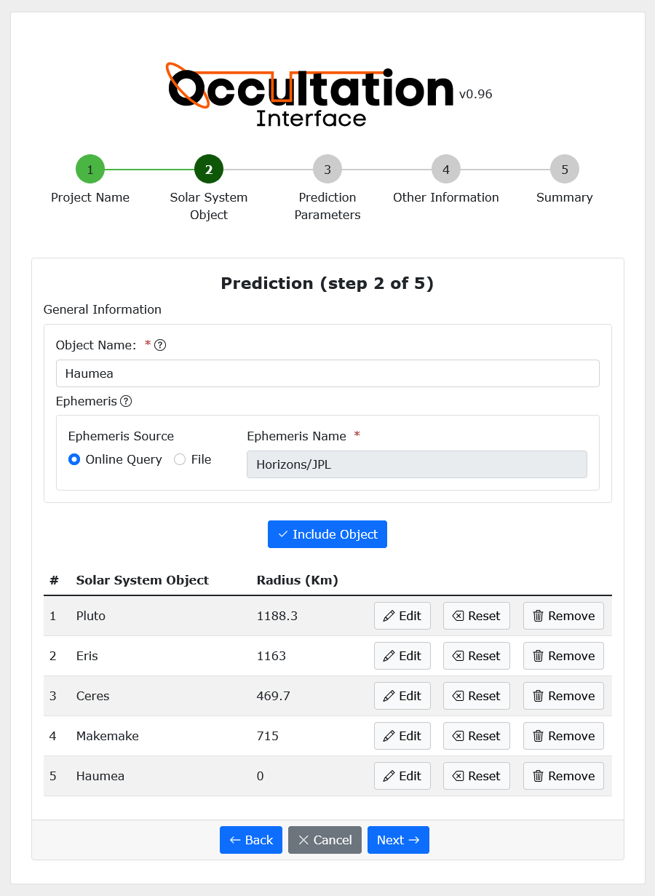{kind=link}
There is also an option to add the files of ephemeris of bodies we are interested in. This case won’t be discussed in the tutorial since it is only recommended for experienced users. The result should be the same.
Note finally that if you’re interested in many bodies with distinct characteristics you may want to create separate projects. When we set the time window for the prediction, we set it for all bodies, which may cause inconveniences if bodies have different density of stars in their fields.
Knowing our time interval of interest for the prediction we set the ‘Start Time’ and ‘End Time’ in the next step, ‘Prediction Parameters’. The star magnitude Limit is basically how faint of a star you want to search in the catalog for it to be considered an event when occulted. Usually, stars fainter than 18 ( >18 apparent magnitudes) aren’t ideal. The catalog of which the interface searches the stars is the GAIA eDR3 and for most cases should be kept that way.
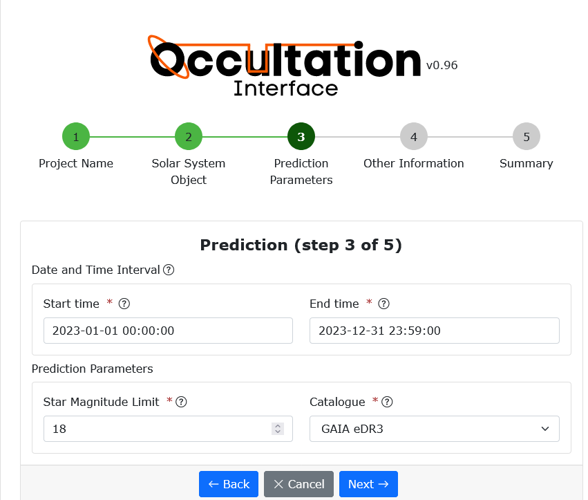{kind=link}
We can also set the granularity of the search in ‘Search Steps’ and the number of segments that the search should be divided into in ‘Segments’. This division is due to data flow in long searches. Dividing decreases errors for long queries.
Of course ephemeris can be imprecise. If you are interested in a body with low precision in its position you may want to set the Off-Earth Sigma for the shadows predicted (note that this may be wrong) to be projected close to Earth. It basically uses (Radius + Ephemeris Error * Sigma) for the search instead of Radius.
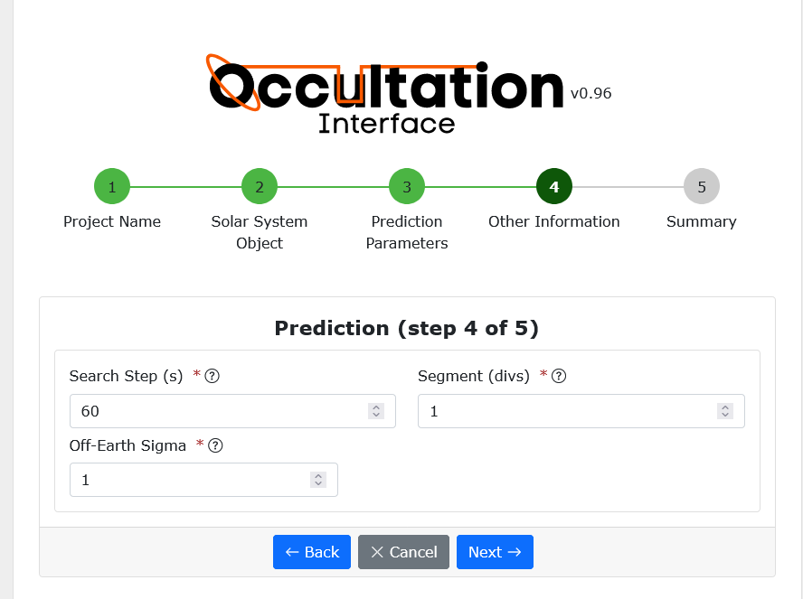{kind=link}
We’re finally into the interface with our first project! We can now see a hierarchy tree in the left panel with the project, bodies and occultations of each. In the top panel there is also an Jobs modal that shows processes occuring, done and waiting. There you can manage your tasks.
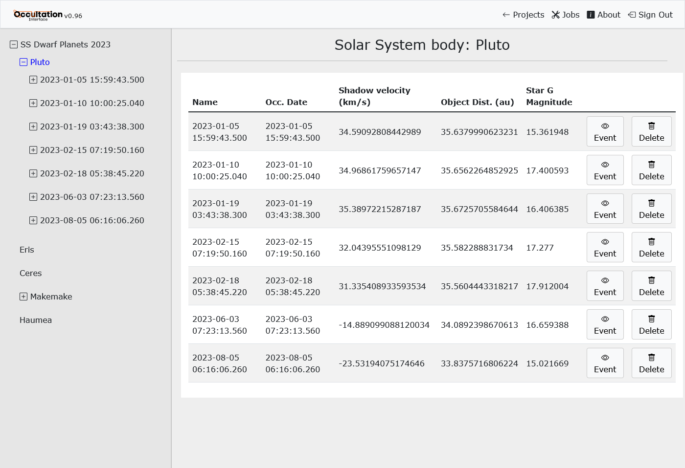{kind=link}
Light Curves & Star
Let’s suppose we have data for one of the body’s occultations. We must add here that the OccultIn does not extract light curves from FITS, images, or video files. These processes are a whole project on their own and have their own other tools that we won’t be discussing.
We can now add our light curve. For this we need a file that contains, at least, a column of time and a column of light flux. We can also have an error column.
Before properly adding a Light curve we set our Star on the same page, the Light Curve section.
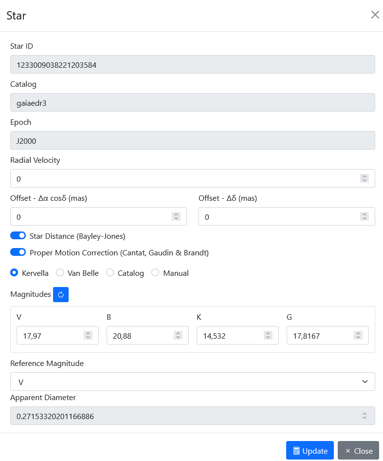{kind=link}
Most properties of the star are already set as we have it on the catalog. For most applications Star distance and Proper Motion Correction should be checked. It is important that we calculate its apparent diameter (at the end of the modal). For that we have a few methods, nominally Kervella and Van Belle. For both, most data is set when we create the project.
Now, to the Light Curve. This process consists of choosing a file and defining the columns of interest for each of the parameters. There is not much more to it in this step. Remember to check the time format used.
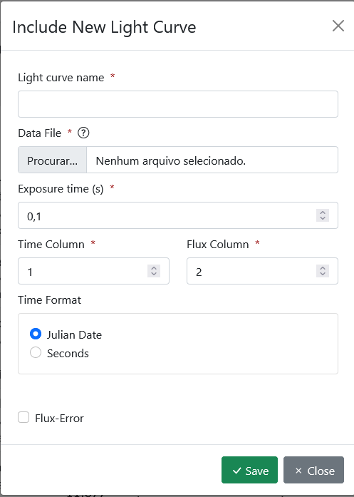{kind=link}
After adding the light curve we can normalize the data. To do so, it is only important to notice that the data must not include the occultation. If the mask is not correctly applied, the occultation may be distorted and the rest of data won’t be properly normalized. We still need to determine key moments in our light curve such as immersion and emersion times. To do so, we use the auto detection function from SORA.
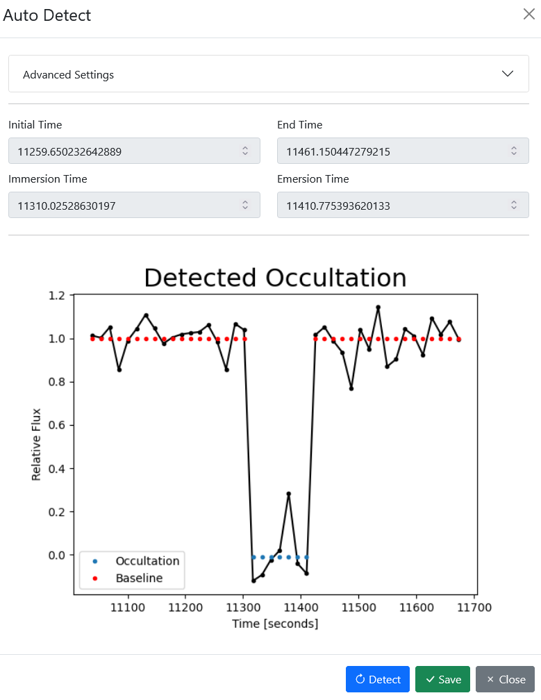{kind=link}
Finally to fit the models in our curve we use the LC fit. Make sure the initial and end time from the occultation are correct.
Observers
For each light curve we have, of course, an observer that captured the data. It is now time to add this information. In the observer page we can set their information, create a new observer and add their coordinates and altitude. For the coordinate, a lot of formats are accepted but note that North and East are considered positive. In doubt, consider using ∓12 34 56.78 (degrees, minutes and seconds) as the format.
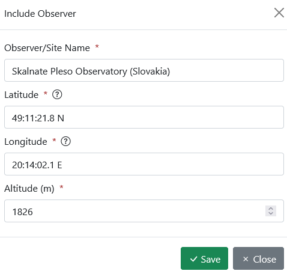{kind=link}
Ellipse fitting
Chords
The first step into fitting the Ellipse is setting the chords that will set its parameters. A chord is nothing more than a light curve projected into the sky plane. For the projection we need to associate the light curve with its observer, in this way, the geometry is set. There may be a shift in time needed if the observation has some note to it. If nothing is abnormal you can ignore this field. For organization purposes you can set the chord color from the hue.
We can now plot the ellipse.
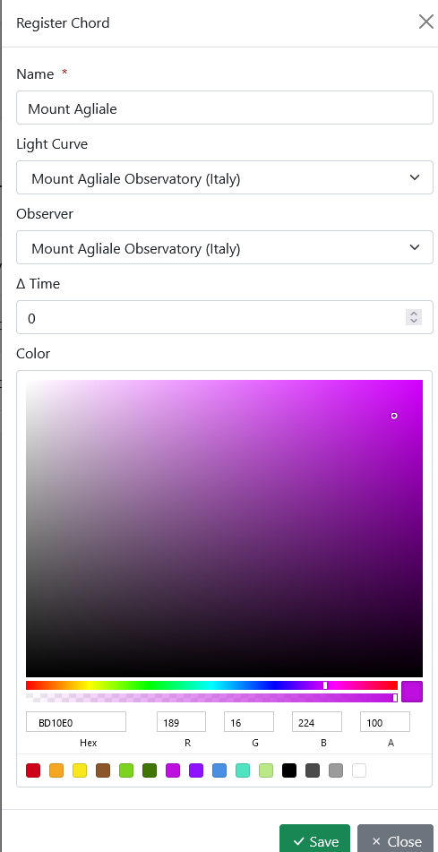{kind=link}
Fitting the ellipse
Now, with all the chords in place we can use some mathematical methods to fit an ellipse to its extremes. Clicking on the fitting you’ll be greeted with a lot of fields. To describe an ellipse it needs 5 parameters. Those are in this coordinate F center, G center, Equatorial radius, Oblateness and Position Angle. For each of those we need an initial guess as the algorithm will try to converge on the best fit parameters. Note that a bad guess parameter can lead to basically divergence.
It is also interesting to set the shadow solutions for ellipses within 3-sigma.We have also generated some chi squared plots for each parameter.
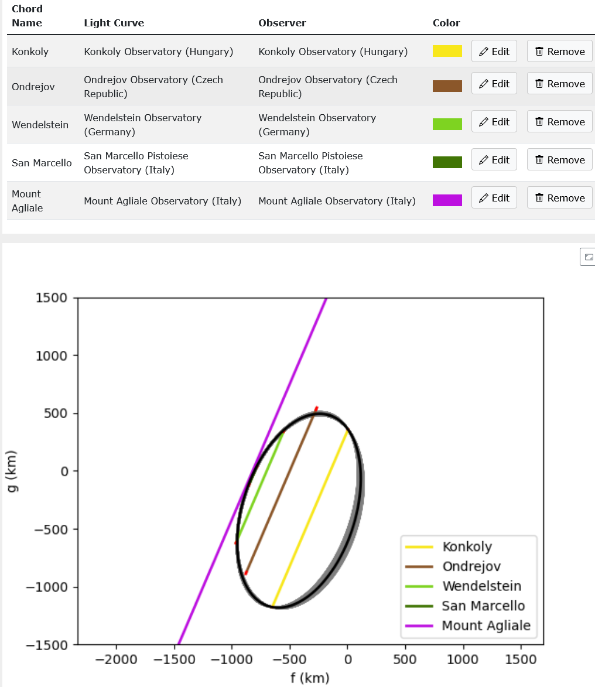 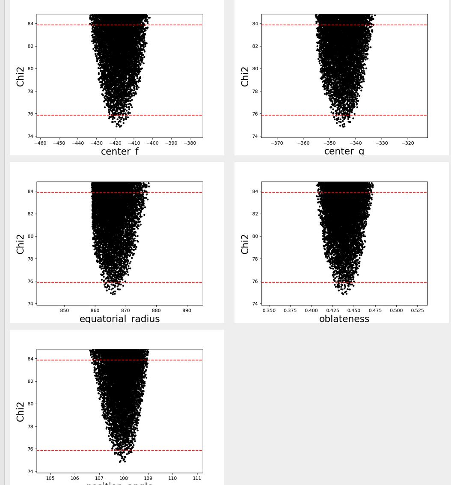{kind=link}
{kind=link}
Filter
If you have an negative chord, that is, an observation that didn’t detect an occultation, you may set it as a boundary condition for your solutions. This is done by setting the chord as negative in the page of Light Curve and clicking on the filter method.
If all went well we can now export the data from the results.